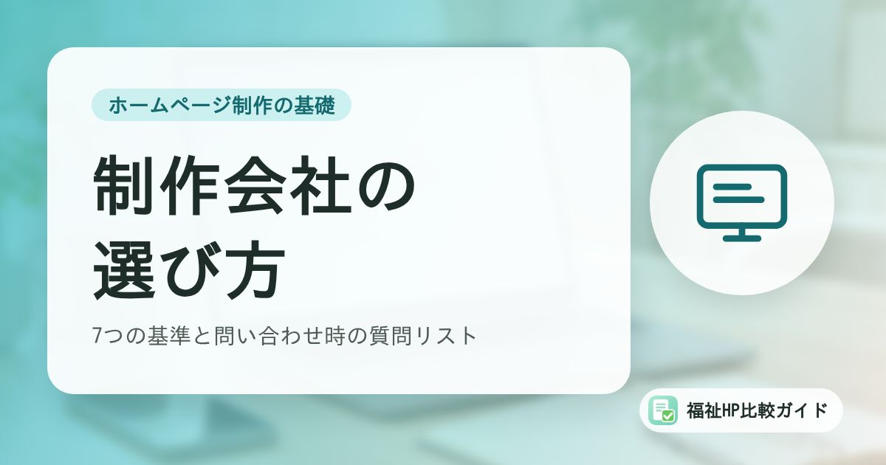

福祉事業所のホームページ制作会社の選び方｜失敗しないための7つの基準と問い合わせ時の質問リスト

ホームページ制作会社は数多くあり、料金もサービス内容もさまざまです。「安いと思って頼んだら、更新のたびに費用がかかった」「担当者と連絡が取れなくなった」といった失敗を防ぐには、比較の基準をあらかじめ決めておくことが大切です。
この記事でわかること
- 福祉事業所が制作会社を選ぶときの7つの基準
- よくある失敗例とその防ぎ方
- 問い合わせ・見積もり時に使える質問リスト25問
- 相見積もりの取り方と比較表の作り方
よくある失敗例
まずは、福祉事業所のホームページ制作でよく聞かれる失敗例を見てみましょう。
| 失敗例 | 原因 | 防ぎ方 |
|---|---|---|
| 文章を少し直すだけで毎回費用がかかる | 自社で更新できない仕組み、更新が別料金 | 契約前に更新方法と料金を確認する |
| 解約したらホームページもドメインも使えなくなった | 制作会社名義のドメイン・サーバー、リース型の契約 | 名義と解約時の扱いを確認する |
| 数年後に改ざんされた | 公開後に誰もソフトウェアを更新していなかった | 保守の範囲と担当を明確にする |
| 福祉の用語や制度を一から説明する必要があった | 福祉分野の制作経験が少ない | 福祉事業所の制作実績を確認する |
| 公開したが問い合わせがない | デザイン重視で、伝えるべき情報や導線が不足 | 目的（見学、採用など）を共有して提案を受ける |
| 担当者と連絡が取れなくなった | 連絡手段やサポート体制が不明確 | 連絡方法、対応時間、担当体制を確認する |
制作会社を選ぶ7つの基準
1. 福祉分野への理解があるか
障害福祉サービスの種類、利用の流れ、公表が求められる情報、利用者や家族が不安に感じることなどを理解している制作会社であれば、打ち合わせがスムーズに進み、必要な情報の提案も受けられます。福祉事業所の制作実績や、実際に制作したサイトを見せてもらいましょう。
2. 料金がわかりやすいか
初期費用・月額費用・オプション費用が明示されているか、追加費用が発生する条件が説明されているかを確認します。比較するときは「1年目の総額」「3年間の総額」で計算しましょう（詳しくは「ホームページ制作費用の相場」）。
3. 公開後に更新しやすいか
お知らせ、空き状況、行事の写真、公表情報など、福祉事業所のホームページは更新が欠かせません。自分たちで更新できるのか、更新を依頼する場合の料金と納期はどうかを確認しましょう。自社で更新する場合は、操作マニュアルや説明会があると安心です。
4. 公開後の保守内容が明確か
ソフトウェアの更新、バックアップ、障害時の対応など、公開後の保守を誰が行うかを確認します。保守契約がない場合は、自分たちで対応する体制が必要です。
5. セキュリティ対策を説明できるか
常時SSL、ソフトウェアの更新頻度、ログイン対策、バックアップ、改ざん時の対応について、具体的に説明できる会社を選びましょう。2026年にはWordPress本体の緊急脆弱性が実際に悪用されるなど、セキュリティ対策の重要性は高まっています（参考：「福祉事業所のホームページが狙われている」）。
6. ドメイン・サーバーの名義を事業所にできるか
ドメインとサーバーを事業所の名義で契約できるか、制作会社が代行取得する場合でも解約時に移管できるかを確認します。ドメインは名刺やパンフレットにも載せる「事業所の住所」のようなものです。
7. 相談しやすいか
電話・メール・オンライン会議など連絡手段、返信の早さ、担当者の説明のわかりやすさも重要です。問い合わせの段階での対応は、公開後のサポートの質を判断する材料になります。
問い合わせ・見積もり時の質問リスト25問
制作会社に問い合わせるときに、そのまま使える質問リストです。必要な項目を選んで使ってください。
実績・体制
- 福祉事業所（同じサービス種別）の制作実績はありますか？見せていただけますか？
- 打ち合わせは何回、どのような方法（訪問・オンライン）で行いますか？
- 担当者は制作から公開後まで同じ方ですか？
- 制作期間はどのくらいですか？急ぎの場合は対応できますか？
料金
- 見積もりは税込ですか、税別ですか？
- 基本料金に含まれるページ数と、追加ページの料金を教えてください
- 文章の作成や整理は料金に含まれますか？
- 写真撮影は料金に含まれますか？素材写真は使えますか？
- 月額費用には何が含まれますか？
- 最低契約期間と、途中解約時の費用を教えてください
機能・内容
- スマートフォン表示に対応していますか？
- 問い合わせフォーム、Googleマップは設置できますか？
- 公表情報（支援プログラム、評価結果など）のページは作れますか？
- 基本的なSEO対策（タイトル、説明文、表示速度など）は含まれますか？
- 文字の大きさや色のコントラストなど、読みやすさへの配慮はありますか？
更新・保守
- 公開後、自分たちで更新できますか？操作の説明はありますか？
- 更新を依頼する場合の料金と、反映までの日数を教えてください
- ソフトウェア（WordPressなど）の更新は誰が、どのくらいの頻度で行いますか？
- バックアップはどのくらいの頻度で取っていますか？
- 改ざんや表示トラブルが起きた場合の対応と費用を教えてください
名義・契約
- ドメインとサーバーは誰の名義で契約しますか？
- 解約した場合、ホームページのデータやドメインはどうなりますか？
- 管理画面やサーバーのログイン情報は共有してもらえますか？
- 制作したデザインや文章、写真の権利はどちらにありますか？
- 契約内容は書面（契約書・発注書）で確認できますか？
回答は記録しておく
質問への回答は、メールなど記録が残る形でもらっておきましょう。後から「聞いていた内容と違う」という行き違いを防げます。
相見積もりの比較表を作ろう
2〜3社から見積もりを取ったら、同じ項目で並べて比較すると判断しやすくなります。
| 比較項目 | A社 | B社 | C社 |
|---|---|---|---|
| 初期費用（税込） | |||
| 月額費用（税込） | |||
| 3年間の総額 | |||
| ページ数 | |||
| 文章作成・写真撮影 | |||
| 自社での更新 | |||
| 保守（更新・バックアップ） | |||
| ドメイン・サーバーの名義 | |||
| 福祉事業所の実績 | |||
| 担当者の対応 |
当サイトの業種別比較記事では、福祉事業所向けのホームページ制作サービスについて、こうした項目を公式情報をもとに整理しています。
まとめ
福祉事業所のホームページ制作会社を選ぶときは、料金の安さだけでなく、福祉への理解、更新のしやすさ、公開後の保守、セキュリティ、名義、相談のしやすさをあわせて確認することが大切です。
質問リストを使って同じ条件で複数の会社に問い合わせ、比較表で整理すれば、自分たちの事業所に合った依頼先を選びやすくなります。
よくある質問
相見積もりは何社くらいに依頼すればよいですか？
2〜3社が目安です。多すぎると比較や打ち合わせに時間がかかり、少なすぎると相場感がつかめません。同じ条件（ページ数、必要な機能、更新の希望など）を伝えて見積もりを依頼すると比べやすくなります。
福祉に特化した制作会社のほうがよいのでしょうか？
福祉の制度や用語、利用者・家族の気持ちを理解している制作会社であれば、打ち合わせがスムーズで、伝えるべき情報の提案も受けやすくなります。一方で、一般的な制作会社でも、ヒアリングが丁寧で福祉事業所の制作実績があれば十分に対応できる場合があります。特化しているかどうかより、実績と提案の中身で判断しましょう。
知り合いや個人のフリーランスに頼むのは危険ですか？
危険とは限りませんが、その方が対応できなくなったときに更新や復旧ができなくなるリスクがあります。依頼する場合も、管理画面・サーバー・ドメインのログイン情報を事業所側で把握し、契約内容を書面で残しておくことが大切です。
参考資料・出典
- 当サイト「福祉事業所向けホームページ制作会社比較」
- 当サイト「障害者グループホーム向けホームページ制作会社比較」
- 当サイト「就労継続支援B型向けホームページ制作会社比較」
- IPA「中小企業の情報セキュリティ対策ガイドライン」
制度・料金・統計は改定される場合があります。最新の内容は各出典の公式情報でご確認ください。